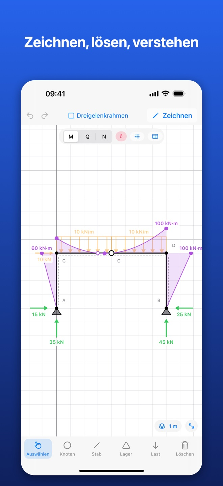
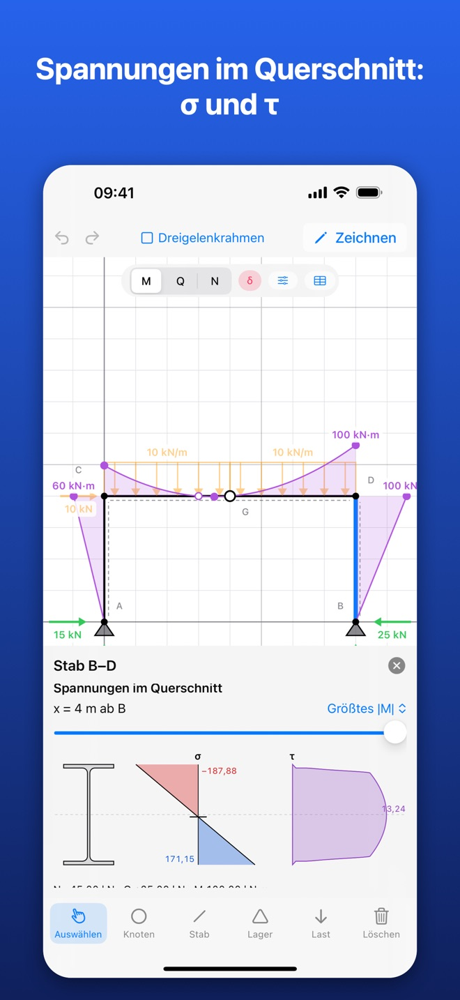
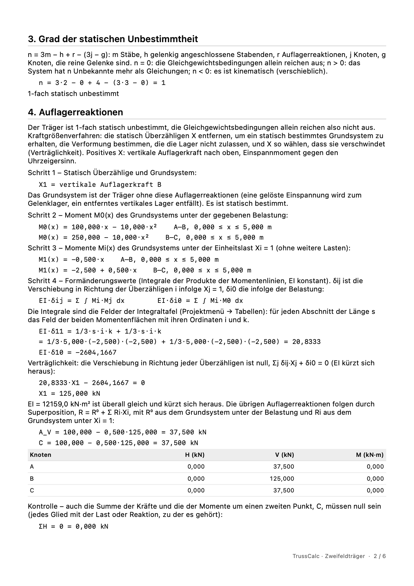
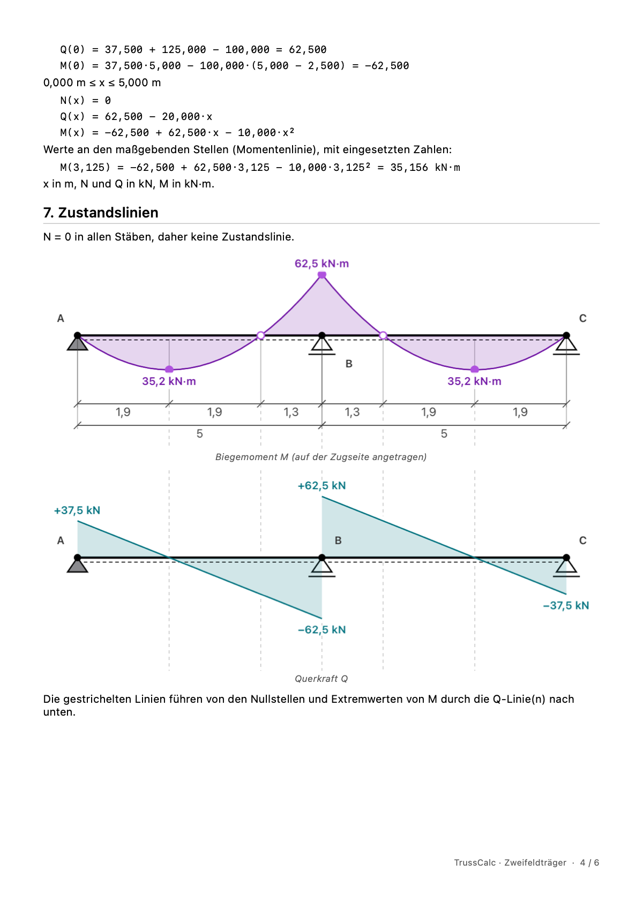
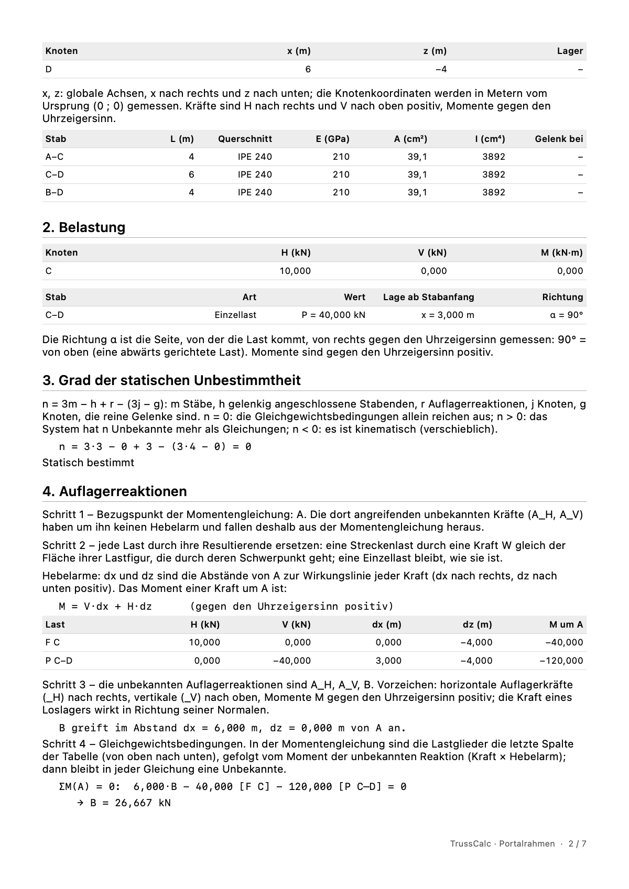
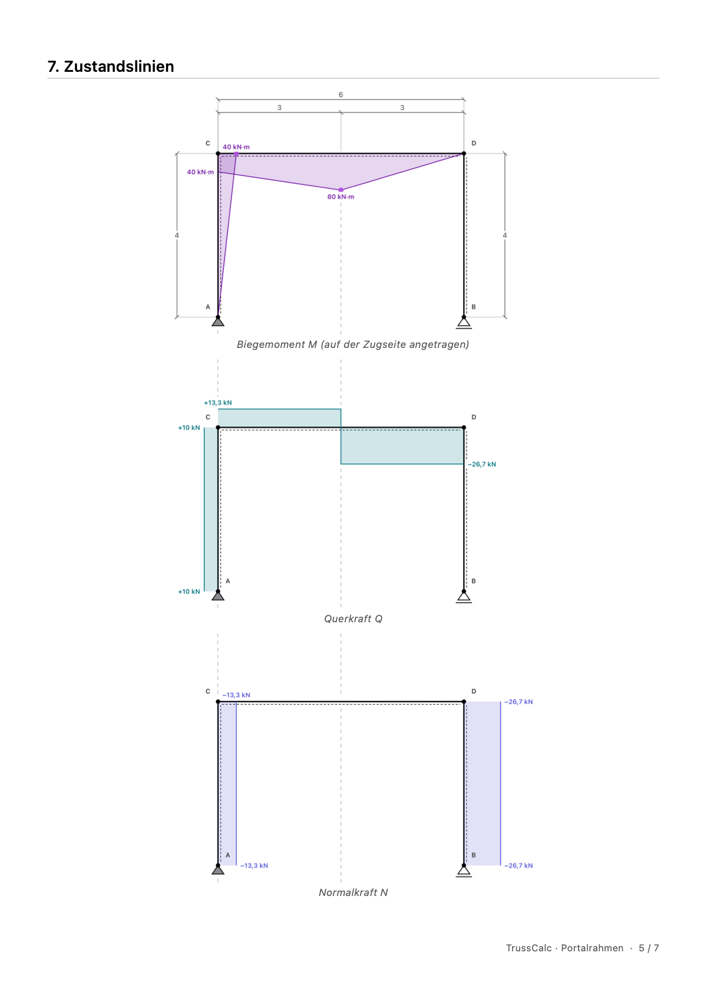

Schnittgrößen an Trägern und Rahmen
Einfeldträger, Kragträger, Durchlaufträger, Gerberträger, Dreigelenkrahmen, eingespannte Rahmen, Bögen: Zeichne das System, wähle ein Profil (IPE, HEA, HEB, HEM) oder gib den Querschnitt mit seinen Maßen ein, und lies die Zustandslinien ab. Das Moment ist auf der Zugseite angetragen, die gestrichelte Faser ist eingezeichnet.


Was du bekommst
- Auflagerreaktionen, auch Einspannmomente
- M-, Q- und N-Linie mit Nullstellen und Extremwerten von M
- Verformungsfigur und Durchbiegung
- Spannungen σ(z) und τ(z) im Querschnitt an jeder Stelle eines Stabes (für Profile und für Querschnitte, die mit ihren Maßen eingegeben sind)
- Gelenke, Einzellasten, Einzelmomente, Gleichstrecken-, Dreieck-, Trapez- und Parabellasten
- Mit Pro: Lastfälle G und Q mit Kombinationen wie 1,35G + 1,50Q, Eigengewicht, Bögen
Der Lösungsweg
Auflagerreaktionen Schritt für Schritt (bei statisch bestimmten Systemen mit drei Auflagerkräften und ohne Gelenke; sonst aus der Steifigkeitsberechnung, mit vollständiger Kontrolle), Schnittgrößen stabweise als Funktionen N(x), Q(x), M(x), die Zustandslinien untereinander, die Biegelinie aus EI·v″ = M, zweimal integriert. Statisch unbestimmte gerade Träger (waagerecht, EI konstant, bis dreifach unbestimmt) werden mit dem Kraftgrößenverfahren gerechnet, die Formänderungswerte mit der Integraltafel, wenn die Momentenflächen in der Tafel stehen. Passt der Träger zu einem Fall der Balkentabelle, steht der Vergleich dabei.
Beispiele als PDF: Zweifeldträger · Portalrahmen




Nur zum Lernen. TrussCalc ist ein Lernwerkzeug. Prüfe die Ergebnisse immer von Hand oder mit anderer Software. Die App ersetzt keine Tragwerksplanung.